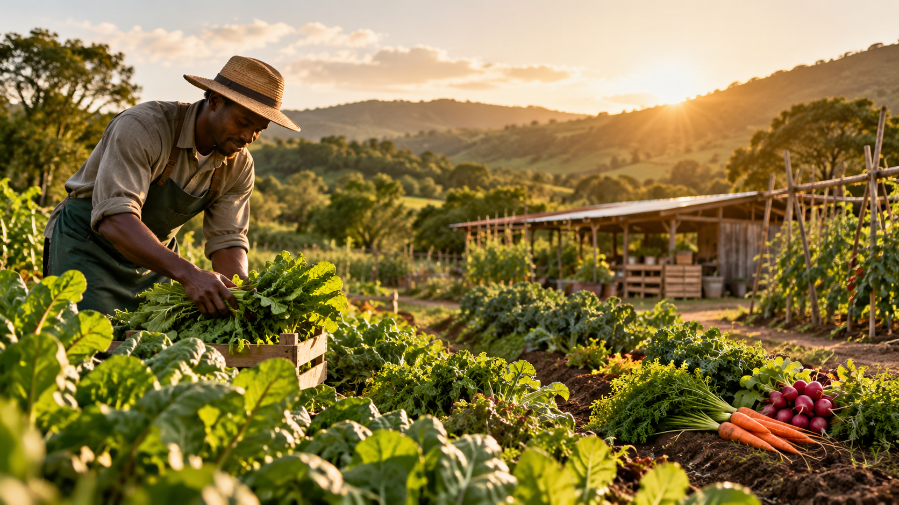

Local first
We work with nearby growers and producers whenever the season allows.
01 LOCAL SOURCING
Shorter journeys. Better ingredients.OUR STORY
Harvest Project connects everyday dining with the people who grow, make and supply our food.

We work with nearby growers and producers whenever the season allows.
01 LOCAL SOURCING
Shorter journeys. Better ingredients.Our menu changes as the harvest changes — not the other way around.
02 WEEKLY MENU
Fresh choices, updated often.03 TRANSPARENT INGREDIENTS
Know what is on your plate.